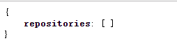
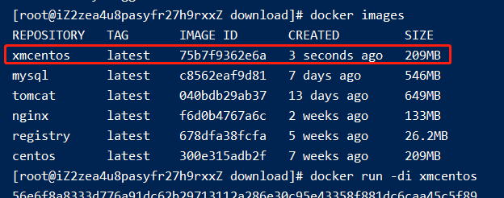
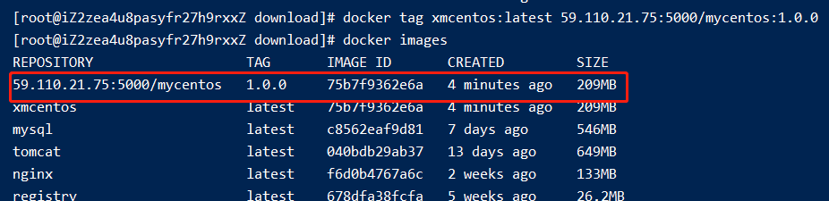
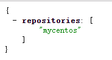
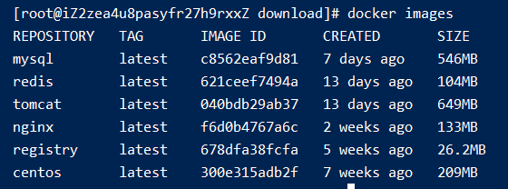
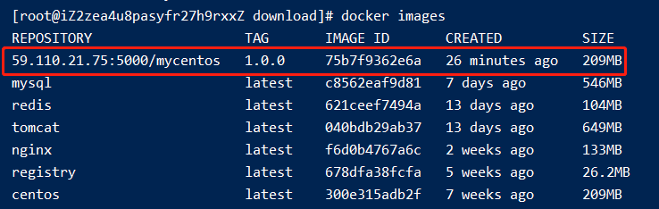

010-docker私服搭建
- 拉取私服镜像:
docker pull registry - 运行镜像:
docker run -di --name myPriDocReg -p 5000:5000 registry - 访问
http://59.110.21.75:5000/v2/_catalog得到下面结果说明搭建成功。
现在仓库里什么都没有所以为空的

修改
daemon.json，让docker信任私有仓库地址vim /etc/docker/daemon.json新增内容如下:
{ "insecure-registries": ["59.110.21.75:5000"] }重启
systemctl restart docker
- 打tag
格式:
docker tag [要打tag的镜像名]:[版本号] [私服IP端口]/[要起的名字]:[版本号]
选择一个自己的镜像

执行docker tag xmcentos:latest 59.110.21.75:5000/mycentos:1.0.0打tag

- push到私服
格式:
docker push [docker images查出的名字]:[版本号]
执行docker push 59.110.21.75:5000/mycentos:1.0.0
- 在访问
http://59.110.21.75:5000/v2/_catalog可以看到数据了

- 恢复到干净的镜像状态

- 从私服拉取镜像:
docker pull 59.110.21.75:5000/mycentos:1.0.0
